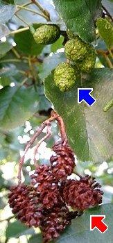

|
| Die Früchte werden von September bis Oktober reif.
 | Die Fruchtstände sind kleine eiförmige Zapfen.
Am Anfang sind sie grün. Später werden sie schwarzbraun und holzig.
Nun fallen winzige geflügelte Nüsschen heraus.
Die Nüsschen werden vom Wind und vom Wasser verbreitet.
|